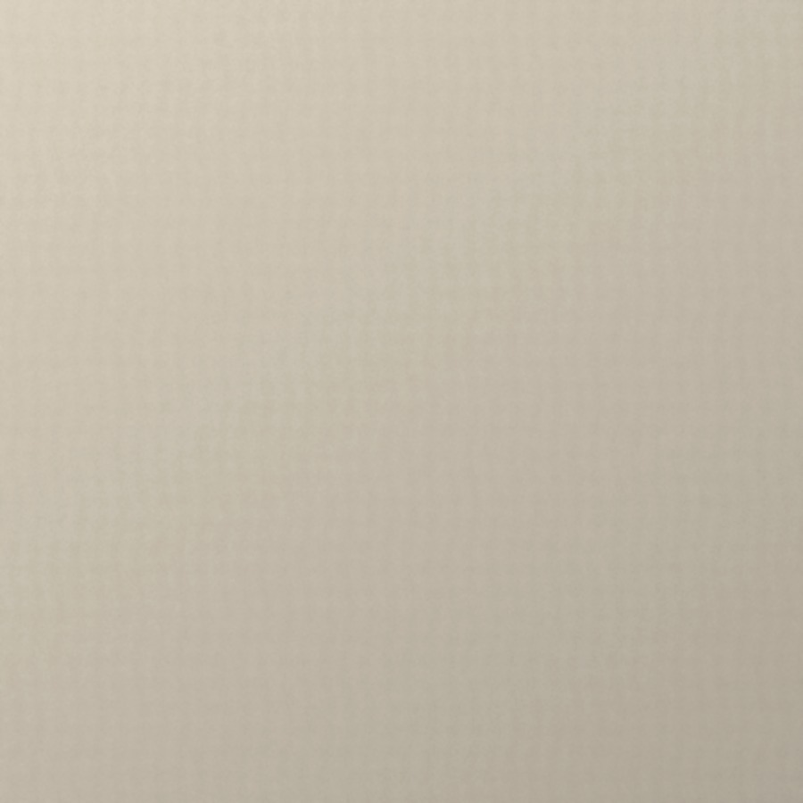
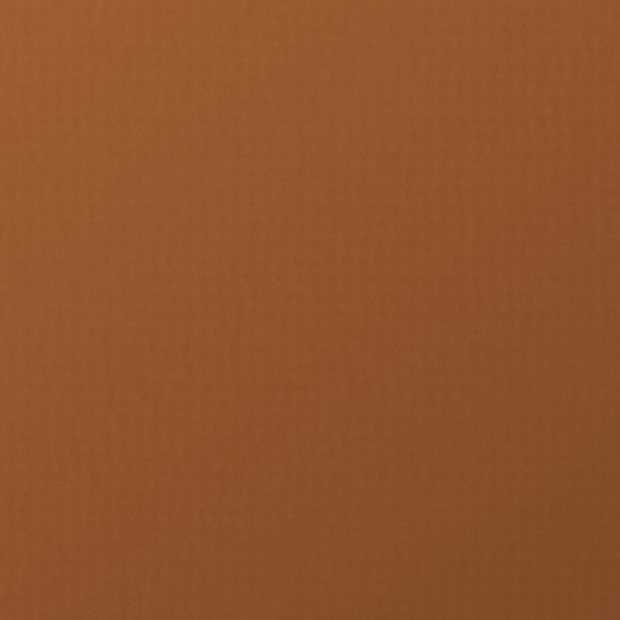
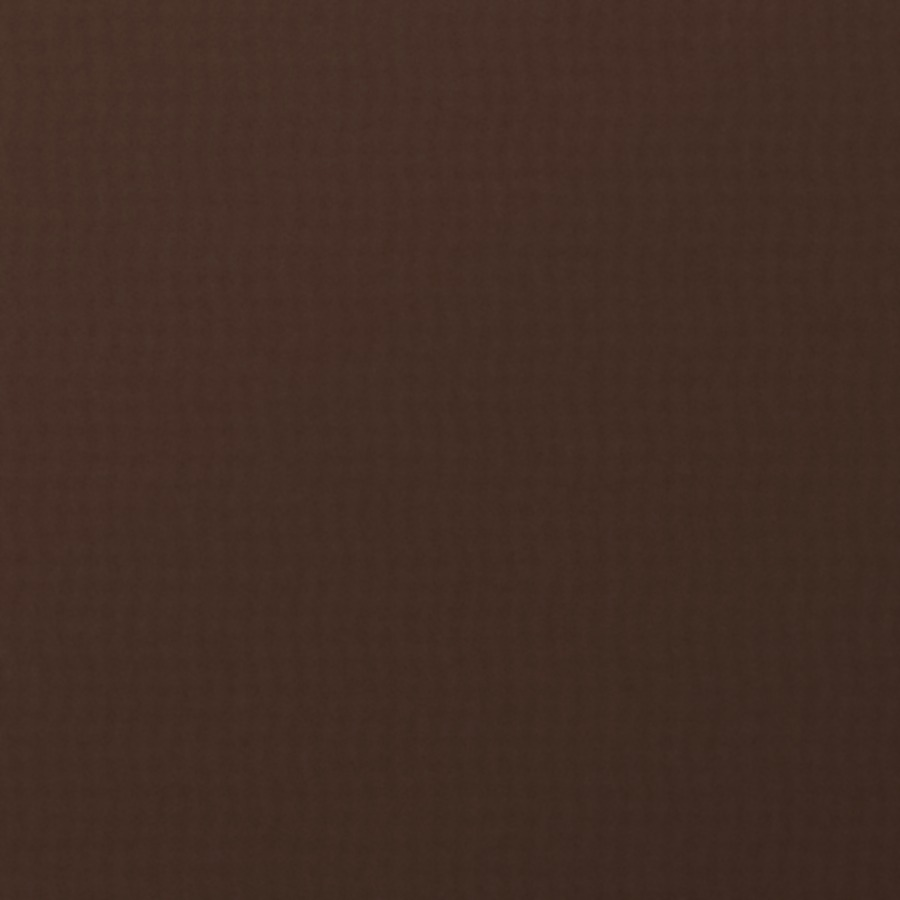
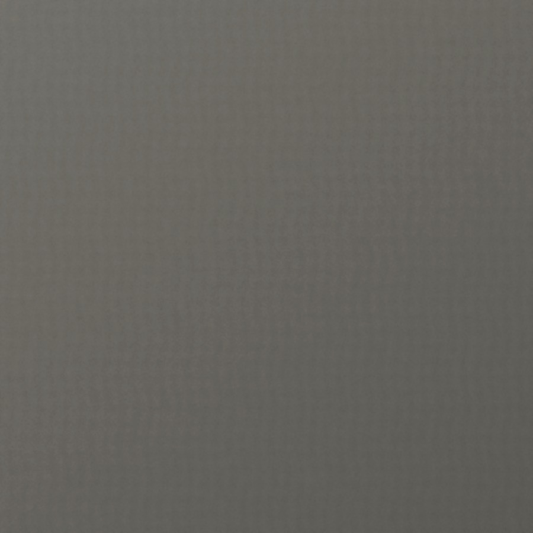
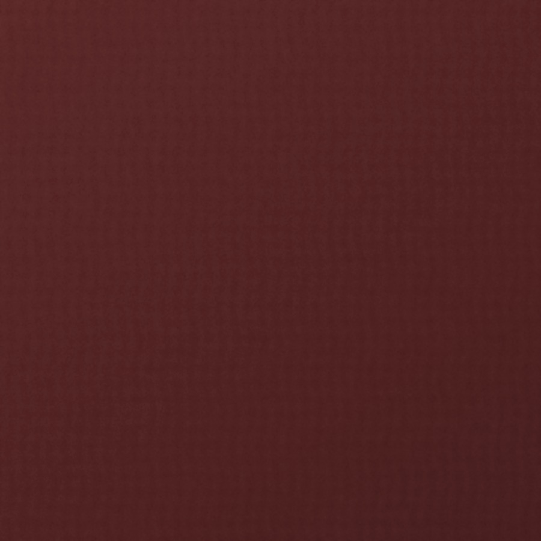

CASA PIEL · LAS MERCEDES
Diseño italiano.
Sensación de hogar.
Una selección de piezas, materiales y formas creadas para habitar el tiempo.
Descubrir Casa PielDesde 1999
Casa Piel nació de una relación profunda con el mobiliario: conocerlo, elegirlo, vivirlo y entender por qué algunas piezas permanecen más allá de una tendencia.
Hoy esa experiencia encuentra una nueva expresión en Las Mercedes: mobiliario italiano de alta gama, pieles cuidadosamente seleccionadas y asesoría que acompaña cada elección desde el showroom hasta el hogar.
Nuestra historia ↘“No elegimos una pieza solamente porque sea bella. Debe sentirse tan bien como se ve.”CRITERIO CASA PIEL
Ramy comienza su recorrido profesional en el mundo del mobiliario. Ese contacto inicial se convierte en una forma de mirar el producto desde adentro.
La Yaguara abre sus puertas como una propuesta de mobiliario y decoración para el hogar, con 1.800 m² de exhibición en Caracas.
Un viaje de Ramy y Vicky marca el inicio de una relación duradera con la piel como material protagonista: tacto, nobleza, oficio y permanencia.
Surge la inquietud por crear una experiencia más sofisticada, dirigida a una nueva manera de habitar y de entender el mobiliario de alta gama.
Casa Piel abre un nuevo capítulo centrado en mobiliario italiano, piezas en piel y una amplia posibilidad de personalización.
Curaduría
La selección de Casa Piel reúne firmas y diseñadores que entienden el mobiliario más allá de su función: proporción, material, detalle y una manera de vivir el espacio.
Piel · Semi-piel · Acabados
Desde 2001, la piel ocupa un lugar esencial en la identidad de Casa Piel. Cada acabado cambia con la luz, el uso y el tiempo.

Piel / acabado mate

Piel / grano natural

Piel / acabado cálido

Piel / tono mineral

Piel / tono profundo
Piel / grano fino
Una selección editorial de ambientes, texturas y formas que expanden el universo Casa Piel más allá del catálogo.
Después de la portada, el movimiento.
El gesto de la materia
La piel y la luz
Ritmos del espacio
Caracas
Una conversación, no un formulario.
Arquitectos, diseñadores, clientes y profesionales pueden conversar con nuestro equipo para conocer piezas, acabados, disponibilidad y posibilidades de personalización.
Hablar con Casa Piel ↗